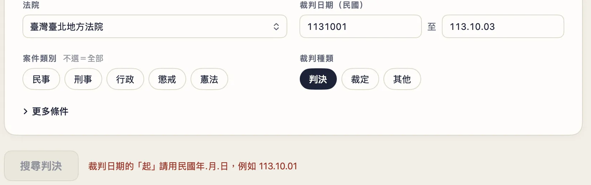
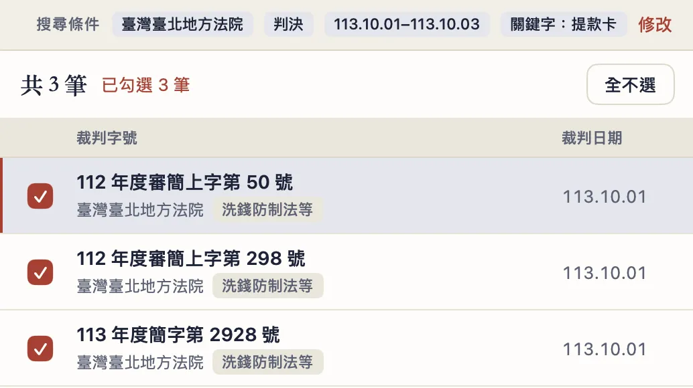
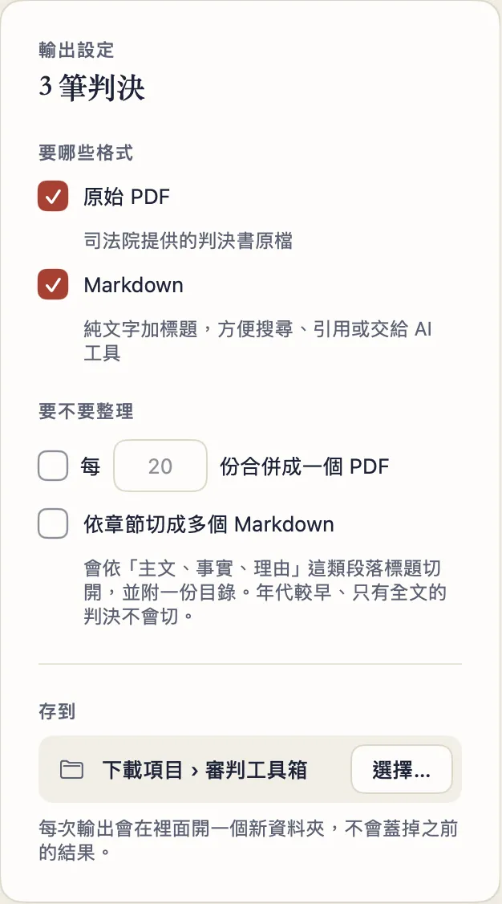
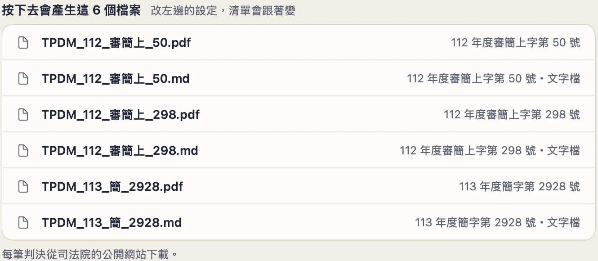

到司法院網站找判決並批次下載：判決下載教學
要找某個法院一段期間內、跟某個關鍵字有關的判決，一筆一筆在網站上點開下載很花時間。「判決下載」把搜尋條件送到司法院的裁判書查詢網站，先列出清單讓你看全文、勾選，最後才一次下載。
這個工具做什麼
「判決下載」是首頁「判決」那一組唯一的工具（Mac 也可以按 ⌘1）。流程分三步：搜尋 › 勾選與預覽 › 輸出。
- 搜尋這一步只列出清單，不會下載任何檔案。
- 點清單裡的一筆，可以先看判決全文，確定是要找的那一件再勾選。
- 最後才決定要哪些格式：司法院提供的原始 PDF、Markdown，或每幾份合併成一個 PDF。
這篇用的例子是：臺灣臺北地方法院、裁判日期 113.10.01 到 113.10.03、關鍵字「提款卡」。公開判決裡有當事人的真實姓名，所以下面的截圖只留清單的案號欄與輸出設定，不放判決全文。
資料從哪裡來
判決的資料來自司法院的裁判書查詢網站（judgment.judicial.gov.tw）。按下搜尋時，App 從這台裝置直接連到該網站送出條件；下載時也是直接向該網站取得判決。連線不經過我們的伺服器。
審判工具箱是個人開發的工具，與司法院沒有任何關係，也不是司法院提供的服務。網站提供的內容、維護時間和規則，都依司法院的安排。網站維護、暫停服務或改版時，App 會搜尋不到或下載失敗，這不是你的條件填錯了。
第一步：填搜尋條件
點「判決下載」，畫面是「要找什麼判決」的表單。
- 關鍵字：用空白分隔幾個詞時，全部符合才列出，例如「提款卡 幫助詐欺」。
- 案由：例如「詐欺」。不確定案由怎麼寫時，可以先空著，只用關鍵字找。
- 法院：點選單選一個法院，或選最上面的「所有法院」。一次只能選一個法院；要找兩三個法院，請分開搜尋。
- 裁判日期（民國）：起訖兩格，寫成「113.10.01」。「113/10/1」「113-10-01」也可以。
- 案件類別：民事、刑事、行政、懲戒、憲法，可以選好幾個；都不選就是全部。
- 裁判種類：判決、裁定、其他（和解／調解筆錄、決定書）。預設只選「判決」，至少要留一種。
日期格式不對時，按鈕旁邊會直接說哪裡不對，「搜尋判決」按不下去。

填好後按「搜尋判決」（Mac 按 Return 也可以）。搜尋中會顯示「正在連線司法院…」與進度，可以按「停止」。
更多條件
表單下方的「更多條件」點開後，還有年度、字別、號（起）、號（迄）、主文，以及大小下限、大小上限（KB）。已經知道案號時，用年度、字別、號碼找最快。填了幾項，旁邊會標「已填 N 項」。
法院、案件類別、關鍵字、案由、裁判日期、年度、主文、大小這些都沒填時，不能搜尋，會顯示「搜尋沒有成功：請至少輸入一個搜尋條件」。只填字別或號碼不算。
第二步：看全文、勾選
搜尋完成就進到「勾選與預覽」。最上面一列是剛才的搜尋條件，按「修改」回到表單。

- 左邊是清單，「共 N 筆」旁邊顯示已勾選幾筆。剛搜尋完一筆都沒有勾，每列左邊的框是勾選；「全選」「全不選」在右上。
- 右邊一開始顯示第一筆的全文。點其他列（不是點框），右邊換成那一筆判決的全文，上方標著裁判日期、案由，以及「有 PDF」或「僅全文」。
- 「僅全文」是司法院沒有提供 PDF 的判決（多半是年代較早的），下載時會改存成全文的 Markdown。
勾好要的，按右上角的「輸出 N 筆」。一筆都沒勾時，按鈕旁會寫「先勾選至少一筆」。
第三步：選格式並輸出
左邊是輸出設定，右邊列出會產生的檔案。改左邊的勾選，右邊的清單跟著變。

要哪些格式
- 原始 PDF：司法院提供的判決書原檔。
- Markdown：純文字加標題，方便搜尋、引用或交給 AI 工具。
兩個至少勾一個，都不勾時會提醒「至少選一種格式」。
要不要整理
- 每 N 份合併成一個 PDF：勾了以後填份數（預設 20，可以填 2 到 500）。例如 45 筆、每 20 份，會得到「合併_001（第1-20份）.pdf」等三個檔案；勾合併時，不另外留每一筆的 PDF。要先勾「原始 PDF」才能合併。
- 依章節切成多個 Markdown：依「主文、事實、理由」這類段落標題切開，每筆一個資料夾，附一份目錄。年代較早、只有全文的判決不會切。每筆會切成幾份要下載後才知道，所以按鈕只寫「開始輸出」，沒有寫檔案數。

右邊每一列是一個檔名，右側寫著案號。判決還沒下載，這裡沒有「預覽」。確認後按右上角的「開始輸出 N 個檔案」。
輸出的檔案
- 檔名是法院代碼、年度、字別與案號，例如「TPDM_112_審簡上_50.pdf」，不含當事人姓名。
- Markdown 跟 PDF 同名，副檔名是 .md。
- 檔案存在「下載項目 › 審判工具箱」底下新開的資料夾，資料夾名稱用關鍵字、案由與法院組成，例如「提款卡 臺灣臺北地方法院」。同名資料夾已經存在時，後面會加上日期與時間，不會蓋掉之前的結果。輸出前可以用「存到 › 選擇…」換位置。
完成畫面可以按「在 Finder 顯示」，或「交給 AI…」把這次下載的判決交給 AI 工具整理（只有 Mac，做法在交給 AI那篇）。要再下載另一批，按「再找一次」。
搜尋不到的時候
- 顯示「查無結果」：條件太嚴。放寬日期範圍，或把「案由」清空只留關鍵字，再按左上角的返回修改條件。關鍵字用空白分了好幾個詞時，每個詞都要出現才會列出，也可以減少詞數。
- 顯示「搜尋沒有成功：連線失敗…」或「搜尋失敗…」：多半是連線的問題。先確認這台裝置可以上網；網路正常仍然失敗時，可能是司法院網站在維護或改版，請晚一點再試，或直接到司法院的網站確認能不能查詢。
- 「搜尋沒有成功：無法連線，請確認網路或 Proxy 設定」：找不到司法院網站的位址，通常是沒有網路，或公司網路需要另外設定 Proxy。
- 結果很多：網站一次查詢最多回傳 500 筆，超過時 App 會自動把日期範圍切小、分幾次查，比較久。範圍大時，建議先縮小日期或加關鍵字。
在 iPhone・iPad 上
條件與輸出設定跟 Mac 相同。在 iPhone 上，搜尋結果是一整頁的清單，每列左邊的圓框是勾選；點一列會整頁顯示那一筆判決，底部可以按「勾選這一筆」。「輸出」等按鈕在畫面下方，下載的檔案在「檔案」App 的「我的 iPhone › 審判工具箱」。細節在在 iPhone・iPad 上使用那篇。
做不到的事／要注意
- 只能找司法院裁判書查詢網站上公開的裁判。網站上沒有的（例如未公開的裁判），這裡也找不到。
- 司法院網站維護或改版時，搜尋與下載可能失敗；改版後要等 App 更新才能恢復。
- 法院一次選一個，或選「所有法院」，不能同時勾兩三個法院。
- 判決全文含有當事人的真實姓名。下載的檔案要分享或交給 AI 工具前，請自己判斷是否需要先處理，例如用去識別化換成代號。
- 依章節切割是照段落標題判斷，標題寫法特殊的判決可能切不開或切錯，請打開目錄核對。
常見問題
判決下載的資料從哪裡來？
來自司法院的裁判書查詢網站（judgment.judicial.gov.tw）。App 從你的裝置直接連到該網站搜尋與下載，不經過我們的伺服器。審判工具箱與司法院沒有關係。
為什麼有時候搜尋不到？
條件太嚴時會顯示「查無結果」，可以放寬日期或減少關鍵字。顯示「搜尋沒有成功」時，多半是網路不通，或司法院網站在維護、改版，請稍後再試。
可以一次搜尋好幾個法院嗎？
不行。法院一次選一個，或選「所有法院」。要找特定的兩三個法院，請分開搜尋。